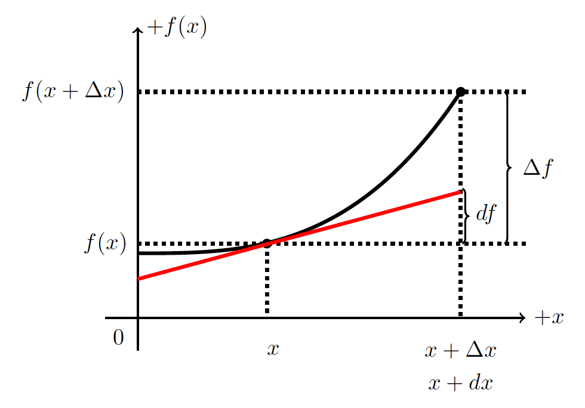

B2.9 Differentials#
The concept of differential is covered early in a first calculus course together with derivatives. However, it is a concept that is often not valued or given much importance as the focus are given to the mastodons of calculus: derivatives and integrals.
Frankly, the vast majority of you will never even notice the importance of the differential in your fields. It is like the vast majority of the population go around their everyday life without knowing trigonometry and seem to be doing just fine. But just think about all the cool stuff they miss out on! Similarly, you can perform basic derivatives and integrals without having a solid understanding of the differential. Now, if you choose math or physics as your major, you will inevitably need a more proper understanding of the differential.
B2.9.1 Difference#
We have defined the gab on the x-axis between two data data points as \(\Delta x\). For example, we can say that \(\Delta x = x_2 - x_1\). Similarly, the gab between to data points on the y-axis is \(\Delta y = y_2 - y_1\). We call these gabs for differences and use the symbol \(\Delta\) to denote a difference: read as “a difference in _____”.
In all pratical applications, the difference is a number. It can be a small number, it can be a large number, there is no restrictions on it (unless you are dividing by it, then it can’t be zero of course).
Since differences are associated with numbers, we can create the ratio of differences (provided the denominator is not zero). For example the ratio between the differences in some dependent function \(f\) and its independent variable \(x\) is what we traditionally call the slope:
B2.9.2 Differential#
The differential is very similar to the difference, but in some sense we can say that it is the connection between algebra and calculus in terms of change. We will consider a small change in x. We will avoid what we mean by small for now, but understand that it is in fact a number and give the it symbol \(dx\).
While \(dx\) is considered a number, it is more of a mathematical concept as its meaning is truly a small number, in fact, so small that we will later let it approach zero, but then again…in math, what is a small number?
What implications does it have for \(df\) vs. \(\Delta f\)? Let us find out. Let us use a figure to investigate properties of this \(dx\) and let us just say that \(dx = \Delta x\).
The red line in the figure is the tangent line to the point \([x, f(x)]\) and is a straight line described by (remember how to write the equation of a straight line by using rise = slope times run?)
Since we know the slope, \(a\), is the derivative, and we want to use grown-up notation \(y \rightarrow f\) and consider small differences (aka differentials), we write Equation (1) as
Here, \(df\) is the rise of the red, straight line and \(dx\) is its run. We have used the derivative \(\frac{df}{dx}\) as the slope of the red line. We keep in mind, that this must be the slope evalutated at the point x.
We notice from the figure that \(df \neq \Delta f\).
We use the term differential for \(df\) and the term difference for \(\Delta f\). Only when \(dx\) approaches zero is \(\Delta f = df\). Key point: both \(dx\) and \(df\) can be assigned values and we can create the ratio (provided \(dx \neq 0\)):
which we can manipulate just like other ratios.
NOTE: although this ratio looks like the derivative, it is not! The derivative is not a ratio, but an operator, which should be read as “derivative of \(f\) with respect to \(x\)”.
Now you see why I in the beginning wrote the derivative as
as it clearly distinguish it from the ratio of differentials.
We will often write the derivative as \(\frac{df}{dx}\) and the ratio of differentials as \(\frac{df}{dx}\) , and we must use the context of the problem/situation to find out if we are talking about one or the other. One is an operator while the other is simply a ratio between numbers (small numbers). This confusion disappears if we use the Lagrange notation for the derivative.
To find the differential of a function, we can use the above as a definition. To avoid the confusion between ratio of differentials and the derivative, it may be more suitable to utilize the Lagrange notation:
The differential of a function \(f\) with respect to its independent variable \(x\) is:
Example 1
Find the differential of \(f(x) = 3x^2\) in terms of the differential \(dx\).
Solution
The differential is defined as
The derivative is
Substituting this into our definition for the differential \(df\):
The interpretation is as follows: if we are moving a small amount \(dx\) away from \(x\) then the function \(f\) is going to change by \(6xdx\).
Find the differential of \(f(x) = 4x^3 - 2x^2\) in terms of \(dx\).
The area of a circle is \(A(r) = \pi r^2\). If we change the radius by a small amount \(dr\), by how much would the area change? HINT: find \(dA\) in terms of \(dr\).
Final Note#
Often, students in calculus go into a mode of memorization instead of understanding. I really want to emphasize the understanding and that is why I made this short note in differentials. We will see something called method of substitution, which is a very powerful method to solve integrals and the key to this method is the differential: how does a small change in something relate to a change in something else.